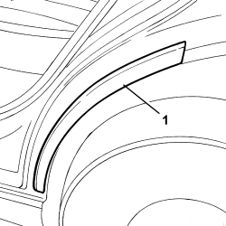

7055B72 GASKET ON REAR WHEEL ARCH BORDER - R R
- Path
- Procedures > 70 FITTINGS > 7055 MOULDINGS ON PROTECTIONS > 7055B EXTERIOR PROTECTIONS > 7055B72 GASKET ON REAR WHEEL ARCH BORDER - R R
- Kind
- repair procedure (removal / refitting; the operation number is the code)
- Applies to
- engines: 1.3 JTD 16v; all production periods; only with equipment: SUV
- Interactive page
- https://sloeber94.github.io/elrnDB-fPnd/en/#/169002273
Applies to: engines: 1.3 JTD 16v; all production periods; only with equipment: SUV
 Removing
Removing
 Refitting
Refitting1. Remove the seal.

Applies to: engines: 1.3 JTD 16v; all production periods; only with equipment: SUV
Refitting
RemovingThoroughly clean the area of the wheelarch where the seal will be bonded and remove any previous residues (where fastened to the same door).
1. Position the seal in its seat and secure with adhesive.
